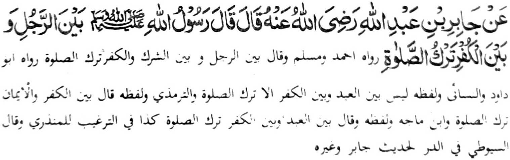

So manga kitaban ko Hadith na inaloy ran so tanto a masopi-it a siksa a bagi-an o manga tao a miyagak sa Sambayang. Pho-on ko madakel a tothol pantag sangka-iya bandingan, na baden maito a miya-aloy ron sangka-iya a pinto. Minsan pen sobo so isa a tapa-os a pho-on ko kasasangan a Nabi (Sallallaho 'Alaihi Wasallam) na kiyatatangka-an den, ogaid na miya-ilay tano, sabap ko babaya ago limo iyan ko manga Ummat iyan, na oman-oman niyan den siran pephaka-iktiyaren anggolalan ko mbaram-barang a okit ka amay-amay na bairan ndarainonen so Sambayang na maparoli ran so manga rarata a bobolos (o kibagaken non). Minsan pen angka-i (manga tapa-os), na phamli-in! ka indadarainon tano pen so Sambayang, na pekharao tano pen tharo a ped tano sa phango-ngonotan ko Nabi (Sallallaho 'Alaihi Wasallam) ago seketano na mala-i paninindeg ko Islam.

Miyaka thitayan ko Jabir bin Abdullah a pitharo iyan a pitharo o Rasulollah (Sallallaho 'Alaihi Wasallam), "Pageletan o mama ago so kafir so kibagaken ko Sambayang". Go pitharo iyan pen, "Pageletan o mama ago so Shirk ago so Kufr so kiba-gaken ko Sambayang". "Da-a pegeletan o oripen ago so Kafir inonta so kibagaken ko Sambayang.
Madakel a Hadith pantag sangka-iya bandingan. Miyaka-isa na so Rasulollah (Sallallaho 'Alaihi Wallam) na miyapanothol a pitharo iyan, "Pamakoti niyo so sambayang iyo igira a makapal so gabon (ka amay-amay na maribat kano na malepas iyo so titho a wakto o Sambayang), sabap sa so kibagaken ko sambayang na ikhabaloy a Kafir.” Tanto a masakit a tapaos apiya sobo so kalepasa ko titho a wakto o Sambayang, sabap sa (miya-aloy sangka-iya Hadith) so kalepasa ko titho a wakto o Sambayang na giyoto den i kinibagakenon. Minsan pen miya-aloy ko tapsiron o manga Ulama, a so kokoman ko Kufr na phanompang ko manga tao amay ka tiyapeles iran so Sambayang (kena ba giyayabo a kini ndaraino-nen niran non), ogaid na so katharo o Rasulollah (Sallallaho 'Alaihi Wasallam) pantag sangka-iya a manga Hadith na aya patot na mapened a kapaka-tana iyan ko manga tao a aden a pada-adat iyan ko Rasulollah (Sallallaho 'Alaihi Wasallam) a maitek bo. Ogaid na aya thanodan tano si-i na so saba-ad ko manga ala-i daradat ko manga Sahabah o Rasulollah (Sallallaho 'Alaihi Wasallam) lagido Umar, Abdullah bin Mas-ud, Abdullah bin Abbas (Radhiallaho ’Anhom), go so manga ped iran go so manga poporo a manga Ulama lagid o Ahmad bin Hanbal, Ishaq bin Rahwiya, Ibn Mubarak (Rahmatollah 'Alaihim), go so manga ped iran na tiyangked iran a so kokoman ko kakha-kafir na bagi-an o tao a pithibaba iyan magak so Sambayang. Pakalidasen tano ron o Allah.